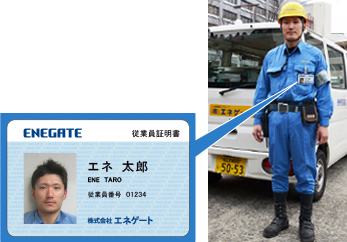

当社は、関西電力送配電㈱からの委託を受けて、電気メーターの取替工事を行っております。
※当社社員の名をかたる詐欺にご注意ください。当社が関西電力送配電(株)から受託している電気メーター取替の費用はかかりません。
当社の社員は必ず従業員証明書を携帯しておりますので、必要に応じて提示をお求めください。また、お客さまからご依頼がある場合を除いて室内に立ち入ることはありません。
電気メーターは計量法の規定に基づき制定された計量法施行令により使用期限が定められております。
当社では、その期限に基づき電気メーターの取替工事を行っております。
電気メーターの取替に伺う私たちは、写真入りの身分証明書を必ず携帯しています。お客さまからお申し出があった場合、身分証明書をお見せすることが義務付けられています。

Q電気メーターはどんな頻度で取替するの？
A計量法により一般のご家庭で使用する電気メーターの使用期限は最長10年と定められているため、使用期限を迎える前に取替工事を行います。
Q工事の日は家にいなければいけないの？
Aご不在でも工事はできます。工事は電気メーターの設置場所で行いますので、作業上、お客さまの敷地内に立ち入らせていただく場合があります。あらかじめご承知おきください。
Q取替えに工事時間はどれくらいかかるの？
A作業場所によりますが、10分から20分程度です。
Q取替え工事は停電でするの？
A基本停電することはございません。設備によっては停電をお願いする場合がございます。停電する場合は次のご協力をお願いします。
①ガス給湯器、エアコン、テレビ、ビデオ、ウォシュレット、パソコン、有線放送受信装置など本体にスイッチがある電化製品は、スイッチをお切りください。（ご不在の場合は、使用されていない電気機器のスイッチをあらかじめお切りください。なお、差込プラグ(コンセント)を抜く必要はありません。）
②ホームセキュリティなど、停電によって異常が通知されるものは、お客さまから予め通知先へご連絡いただくようお願いします。
③ビデオ、DVDなど停電により予約が解除される製品がありますので工事が終わりましたらご確認をお願いします。
Q工事は室内に立ち入ることがあるの？
A工事にあたって、ご使用中の電気機器のスイッチを切っていただいたり、分電盤のスイッチを切っていただくようお客さまにお願いしています。お客さまから係員にスイッチ操作のご依頼がある場合を除いて室内に立ち入ることはありません。
Q工事費用はかかるの？
A取替工事費は無料です。
Q取替えると電気代が上がるの？
A取替えたことで電気代は上がりません。
Q印鑑は必要？
A印鑑を押していただく必要はありません。
Q新しい電気のメーターの指示数はなぜ０でないの？
Aメーターは修理してリサイクルしていますので指示数は０ではありません。
Q取替月の電気の使用量はどのようになるの？
A取り外したメーターの指示数から前回の検針時の指示数を引いて取り外した計器での電気のご使用量がわかります。 また新しいメーターの指示数から取替時の指示数を引くと新しいメーターでの電気のご使用量がわかります。 これらを合計すると当月の電気のご使用量となります。詳細については、ご契約されている小売電気事業者さまへご確認をお願いします。
{kind=link}
電気メーターの取替にご協力をお願いいたします。
工事に関するお問い合わせ先は下記の工事所一覧（18箇所）にてご覧になれます。